Model for Inter-Domain Routing
Inter-Domain Routing
Recall from earlier that routing is performed in a network of networks. We’ve seen distance-vector and link-state protocols that can be used to implement intra-domain routing, which allows packets to be sent within a local network.
In this section, we’ll build a model that will allow us to define inter-domain routing protocols, which can send packets between different local networks. We’ll also see how inter-domain and intra-domain routing protocols combine to allow packets to be sent to any host in any network.
Defining Autonomous Systems
We can formalize the notion of a local network by defining an autonomous system (AS), which is one or more local network(s) all run by the same operator. For example, within a company like Google, there might be a local network for employee computers, and another local network for data centers, but both networks are controlled by the same company. The operator can deploy a single intra-domain routing protocol to send messages between machines on any of those local networks. Sometimes, the term domain is used to informally refer to an AS, though this term is also used in other protocols, so we will say AS when possible.
To think about routing packets between autonomous systems, we can abstract away all of the individual routers and hosts within the AS, and treat the AS as a single entity. Then, we can draw a graph where each node represents an AS, and edges between two ASes represents a connection between them. This graph is sometimes called the inter-domain topology or an AS graph.
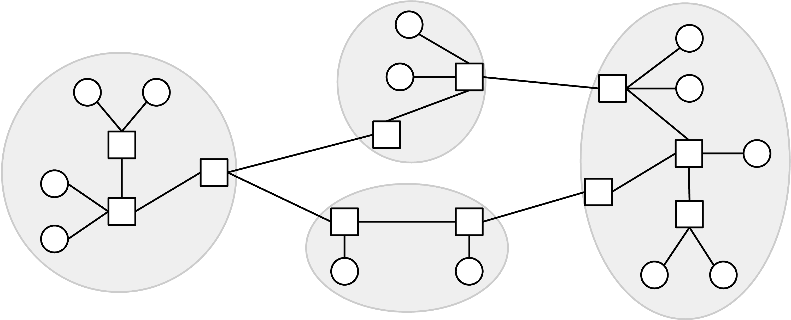
Brief History of Autonomous Systems
In real life, an organization called the Internet Assigned Numbers Authority (IANA) manages a global list of all autonomous systems that exist in the Internet. In order to be an AS, you must register with this organization and receive a unique autonomous system number (ASN).
Fun fact: In the early days, the IANA was administered manually by a single person, Jon Postel. This meant that anybody in the world who wanted to register a new AS would have to ask for his approval.
Today, there are over 90,000 autonomous systems, with the United States having the most ASes of any country.
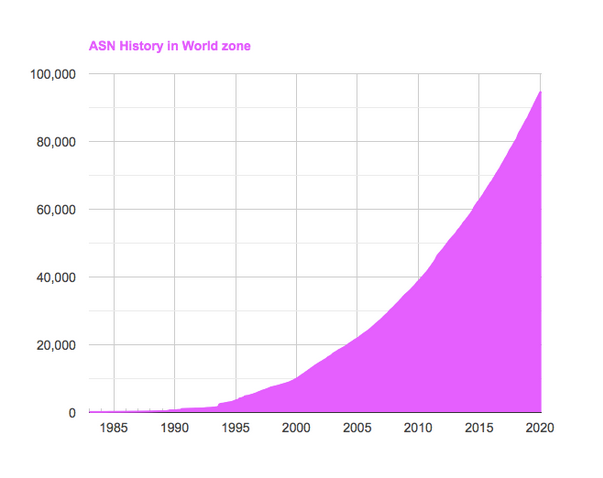
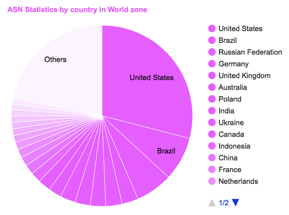
Fun fact: UC Berkeley has ASN 25, which is a remarkably low number given that there are so many ASNs. This reflects the fact that UC Berkeley received its ASN very early in the Internet’s history (in the 1980s).
Types of ASes
Recall that when modeling the network for intra-domain routing, we made a distinction between end hosts and routers. We’ll make a similar distinction for inter-domain routing by defining two types of ASes.
A stub autonomous system only exists to provide Internet connectivity to the hosts in its local networks. A stub AS only sends and receives packets on behalf of hosts that are inside the AS, and does not forward packets between different ASes. These are analogous to the end hosts in our intra-domain routing model, which only sent and received their own packets and did not forward other people’s packets.
Real-life examples of stub ASes include non-Internet companies (e.g. a bank offering connectivity to its employees) or universities (e.g. UC Berkeley offering connectivity to its students and employees). These organizations are not responsible for carrying Internet traffic from other organizations. The vast majority of ASes in the world are stub ASes.
By contrast, a transit autonomous system forwards packets on behalf of other ASes. A transit AS could carry a packet between two different ASes by receiving and forwarding that packet.
Transit ASes correspond to real-life companies whose business includes selling Internet connectivity to other organizations. Real-life examples of transit ASes include AT&T and Verizon, which are companies that you can pay to offer you Internet connectivity. Some transit ASes like AT&T are global, with infrastructure around the world. Others might be specific to a region, like Sonic, an Internet service provider that only forwards traffic to and from California.
Note that a transit AS can still contain end hosts that send and receive packets of their own. Nevertheless, a transit AS is similar to the routers in our intra-domain routing model, which received other users’ packets and forwarded them on behalf of users.
This model of stub and transit ASes is what we’ll use in these notes, though sometimes, the classification in real life can be less well-defined. For example, major tech companies like Google, Microsoft, and Amazon control massive ASes that carry as much traffic as transit ASes (and maybe even more). Because their primary role is to carry traffic to and from their services (e.g. receive Google search requests and send search results), they could be classifed as stub ASes. In recent years, though, these companies have also offered to carry traffic between ASes, so they could arguably be classified as transit ASes as well.
Inter-Domain Topology Is Defined by Business Relationships
In our inter-domain topology, we draw an edge between two ASes if they exchange traffic. What causes two real-life organizations, such as a local bank and Verizon, to agree to exchange traffic? The edges in the AS are defined by real-world business relationships between ASes.
There are two possible ways that a pair of ASes could be related.
A pair of ASes could be involved in a customer-provider relationship. In real life, the customer is paying for service, and the provider is offering connectivity in exchange for money. For example, the local bank AS could be the customer, paying the provider, Verizon, for Internet services.
A pair of ASes could also be involved in a peer relationship. Two peer ASes usually send each other a roughly equal amount of traffic. In real life, two ASes could agree to become peers by signing a legal contract between companies. Usually, the two peers agree to not pay each other for connectivity services, as long as the traffic sent in either direction is roughly equal.
AS Graph with Business Relationships
We can draw these relationships into the AS graph by adding arrows to the graph. A directed edge points from the provider to the customer. An undirected edge connects two peers. Note that the graph can contain both directed and undirected edges (not all edges need to have arrows).
Stub ASes in the graph are only customers. They have incoming edges, showing who provides them with connectivity. However, they don’t have any outgoing edges, because they don’t provide connectivity to others.
By contrast, transit ASes in the graph are the providers. Their outgoing arrows show that they are selling connectivity to other organizations.
Note that the direction of the arrow does not tell us anything about what direction the packets are being sent. In fact, packets can be sent in both directions even along a directed edge. The customer often pays the provider for the ability to send packets to and receive packets from the rest of the Internet.
AS Graphs are Acyclic
The graph of customer-provider relationships is acyclic. The graph does not contain any cycles consisting of directed edges.
This acyclic property exists because of the real-world implications of having a cycle. In real life, a cycle would mean that A pays B, B pays C, and then C pays A, and it doesn’t make sense for money to flow from somebody back to themselves. Also, this cycle would mean that A provides service to C, which provides service to B, which provides service to A. It also doesn’t make sense for somebody to provide connectivity to themselves.
To use an analogy, imagine if you paid UC Berkeley tuition for classes, then UC Berkeley paid the UC system for classes, and then the UC system paid you for classes. This business relationship doesn’t make any sense!
Note that the acyclic property only applies to customer-provider relationships. It is okay if peering relationships form a cycle. For example, it’s okay if A-B, B-C, and C-A are all peers. None of them are sending each other money, so we don’t have an ill-defined business relationship.
Provider Hierarchy and Tier 1 ASes
A consequence of the graph being acyclic is, we can form a hierarchy of providers. In other words, we can arrange the nodes such that all the arrows point downward. The stub ASes are at the bottom, the providers are at the top. Service flows from higher to lower nodes. The lower nodes pay money up to higher nodes.
At the very top of the hierarchy, there are Tier 1 autonomous systems, which have no providers (no incoming edges). Every Tier 1 AS has a peering relationship with every other Tier 1 AS.
A consequence of this hierarchy is: Every non-Tier 1 AS has at least one provider (incoming edge). This makes sense in real life, since you have to pay somebody to offer you connectivity.
In this hierarchy, starting from any AS, and following the uphill chain of providers, always leads to a Tier 1 AS. This also makes sense in real life. The Tier 1 ASes all peering with each other is why the entire Internet is connected (as opposed to, say, two disconnected subgraphs representing two separate Internets where you can only talk to hosts in your own half). In order to guarantee having a path to every other AS in the graph, every AS must have a path upwards that eventually leads to a Tier 1 AS.
TODO-diagram
Some real-world examples of Tier 1 ASes in the AT&T and Verizon (US-based), France Telecom and Telecom Italia (Europe-based), and NTT Communications (Japan-based). There are around 20 ASes that are Tier 1 or nearly Tier 1 in real life. These Tier 1 ASes usually own infrastructure spanning multiple continents (e.g. undersea cables).
The hierarchy structure of the AS graph is defined by real-world business and political motivations. In theory, it would be possible to draw an AS graph that looks like a tree, with a single Tier 1 AS at the root providing services to every stub AS. However, this means that a single real-life entity controls the entire world’s Internet access, which may be undesirable for political reasons.
Policy-Based Routing
Recall that in intra-domain routing, our goal was to find paths that are valid (no loops and no dead-ends) and good (least cost).
In inter-domain routing, we still want paths to be valid. However, unlike in intra-domain routing, where there was nothing special about one router over another, each autonomous system has its own business goals and relationships with other ASes (e.g. customer, provider, peer). Therefore, we will need to re-define “good” to reflect the real-world business goals and preferences of ASes.
In order to allow each AS to carry traffic in a way that’s compatible with its real-world goals, our routing protocol will allow each AS to set its own policy. Then, the paths computed by the protocol should properly respect each AS’s policy.
In theory, ASes can set any sort of policy that they like, although standard conventions do exist (which we’ll discuss next). Here are some examples of policies that an AS could set:
- “I don’t want to carry AS#2046’s traffic through my network.” (Defining how I will handle traffic from other ASes.)
- “I prefer if my traffic was carried by AS#10 instead of AS#4.” (Defining how other ASes should handle my traffic.)
- “Don’t send my traffic through AS#54 unless absolutely necessary.”
- “I prefer AS#12 on weekdays, and AS#13 on weekends.” (Policies can change over time!)
The routing protocol doesn’t care why the AS has these preferences. Perhaps I’m refusing to carry traffic from AS#2046 because it’s a rival company, but the protocol doesn’t need to know that.
Our least-cost routing protocols so far have no way of supporting these policies. Least-cost was a global minimization problem, where every router was trying to solve the same problem. By contrast, in policy-based routing, each AS only cares about its own policy, and there isn’t a global problem that everybody is cooperating to solve.
Gao-Rexford Rules for Routing Policies
Although our routing protocol allows each AS to set any arbitrary policy they like, in practice, most ASes set their policies according to some standard conventions, known as the Gao-Rexford rules. These conventions are based in the assumption that real-world organizations like making money, and dislike losing money.
There are two broad rules that ASes typically follow. First, when an AS has a choice of multiple routes, the AS prefers to forward packets to the most profitable next hop. Specifically, the AS prefers a route with a next hop that is a customer. If there are no such routes, the AS prefers a route with a next hop that is a peer. The AS will only select a route with a next hop that is a provider if it’s forced to do so, because there are no better routes.
This principle dictates the routes that the AS selects. You can think of this principle as a preference-based version of selecting paths in the distance-vector protocol. Instead of selecting the shortest route I know about, I select the route where the next hop makes me money (customer best), or saves me money (if no customers, then peer), and avoids losing money (if no customers or peers, then provider).
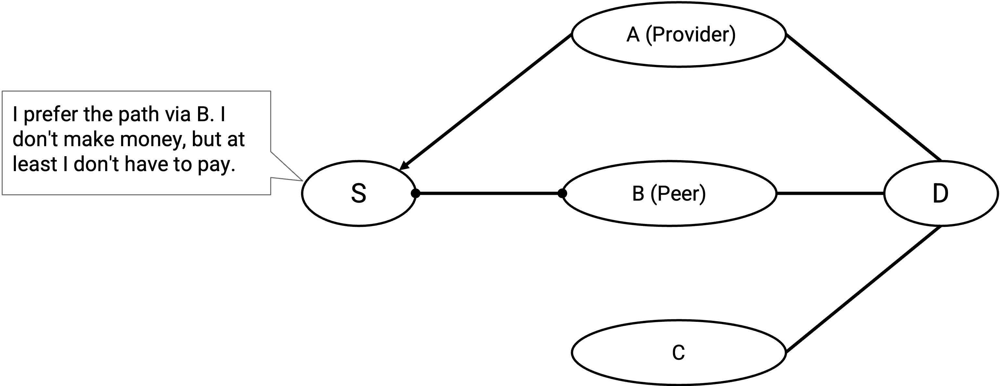
Second, ASes only carry traffic if they’re getting paid for it. There’s no incentive for ASes to perform free labor. This principle dictates the paths that the AS is willing to participate in. You can think of this principle as a more restrictive version of announcing paths in the distance-vector protocol. Instead of advertising a route to every neighbor, allowing anybody to forward packets through me, I only advertise routes in which I’m paid to forward packets.
A consequence of this second principle is: As an AS, the traffic I carry should come from a customer, or go to a customer. In other words, for any route going through me, one of my neighbors must be a customer.
Let’s go through all the specific cases.
Routes where both of my neighbors are customers are good, because I am getting paid by the two customers to forward packets.
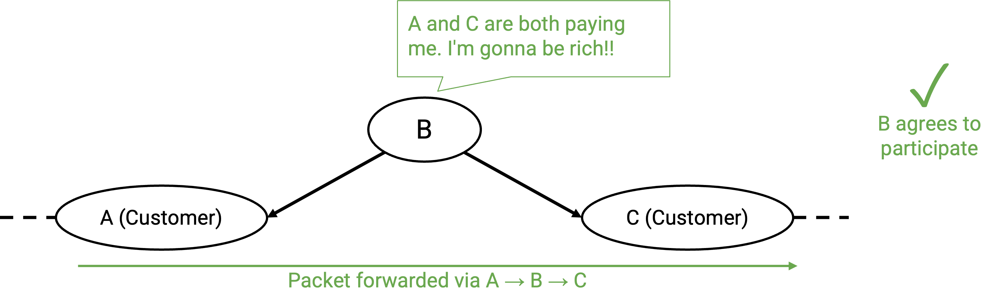
Similarly, routes where one of my neighbors is a customer, and one of my neighbors is a peer are good, because even though the peer doesn’t pay me, the customer does.
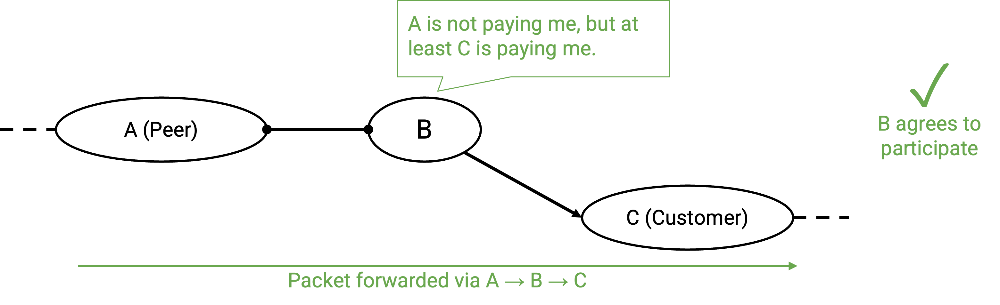
Routes where one of my neighbors is a customer, and the other is a provider are good. At first, it might seem like this path is bad, because the customer is paying me, and then I’m paying the provider. Isn’t it possible that I make no money, or lose money from this transaction? That may be true, but if we didn’t participate in these routes, we would be a useless AS with no customers. An AS’s job is to give connectivity to its users, and participating in these customer-AS-provider routes unlocks more routes to the rest of the Internet.
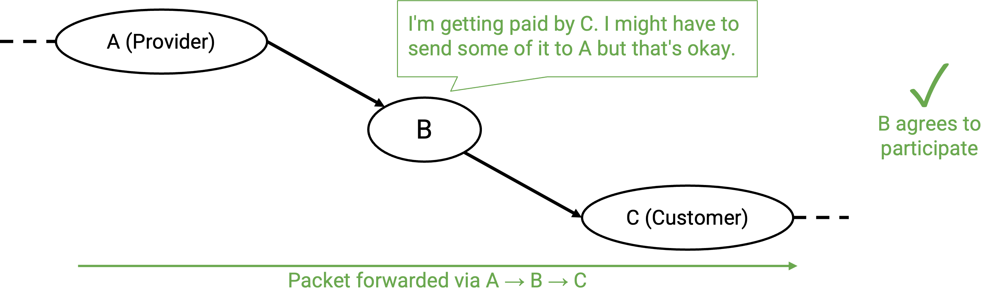
Routes where both of my neighbors are peers are bad, because neither side is paying me to forward packets.
More generally, peers do not provide transit between other peers. Thinking in terms of the hierarchy structure, a path should not stay at a given level for multiple hops.
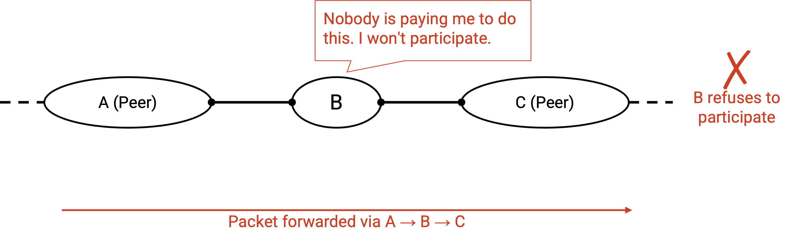
Routes where one of my neighbors is a peer, and the other is a provider are also bad, because again, neither side is paying me to forward packets.
More generally, if an AS has a peering link, that link will only carry traffic to/from its own customers. In other words, when packets arrive at B via that peering link, B’s only profitable option is to forward the packet to a customer (not a provider, and not another peer). Similarly, packets from customers can be forwarded through the peering link (customer pays), but packets from providers and peers cannot be forwarded through the peering link (nobody is paying).
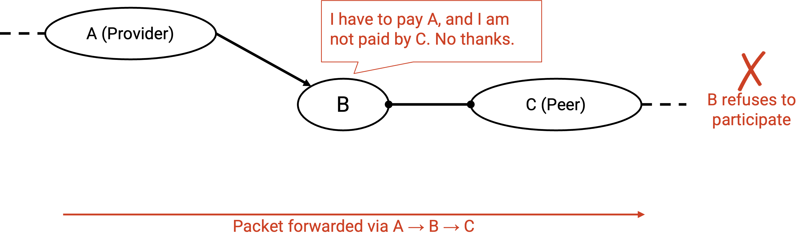
Similarly, routes where both of my neighbors are providers are bad, because I have to pay both sides to forward the packet, and nobody is paying me to do this.
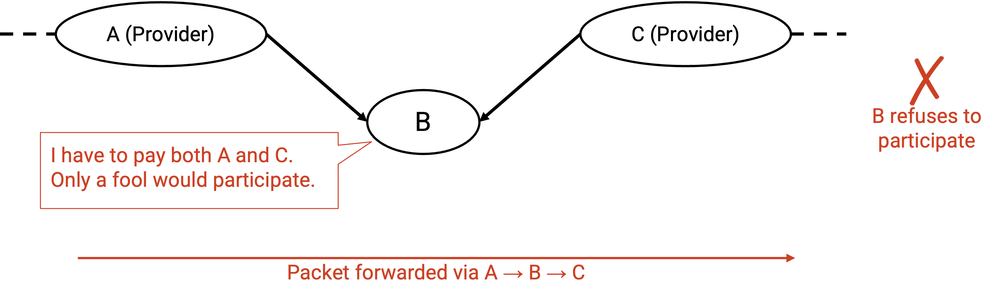
Examples of Gao-Rexford Rules
The policy for selecting routes (customer best, provider worst), and the policy for announcing routes (only announce and participate in routes where one of my neighbors is a customer) will be used in our modified protocol to compute routes that respect each AS’s policy. We haven’t said how to compute routes yet, but given a route, we can check if it satisfies these two policies.
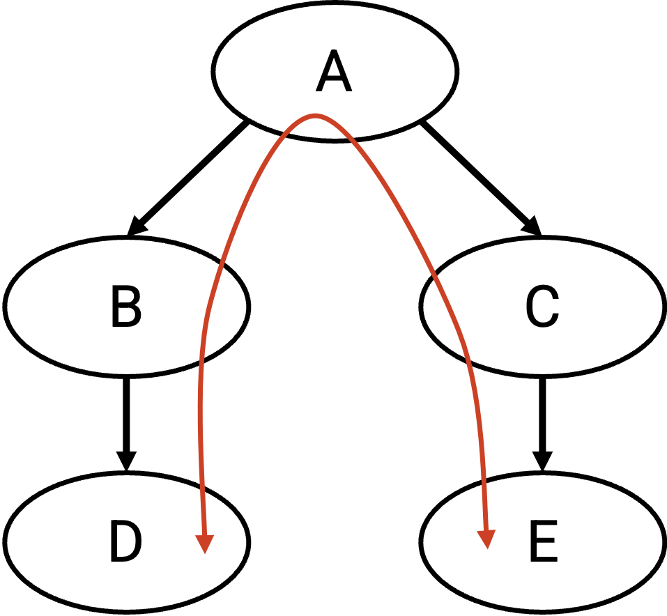
In this example, suppose that a computer in D (a stub AS) wants to talk to a computer in E (another stub AS). D and E might want to exchange messages (remember, arrows represent customer/provider relationships, not direction of packets).
One possible path for the traffic is D, B, A, C, E (and reverse for messages from E to D).
Who is paying whom in this path? Since traffic is being sent along the D-B link, the customer (D) must pay the provider (B). Similarly, E must pay C, and B and C must both pay A.
Will the transit ASes A, B, and C agree to announce and participate in this route? Let’s check each of their neighbors.
A’s neighbors along this path are both customers, so A is making money, and thinks this path is good.
B’s neighbors are a customer (D) and a provider (A). B is making money from the customer (D), and thinks this path is good. (Remember, paths with one customer neighbor and one provider neighbor are good, even if the AS has net profit of 0, because they enable greater connectivity.)
Similarly, C has at least one customer neighbor (E), so it also thinks this route is good.
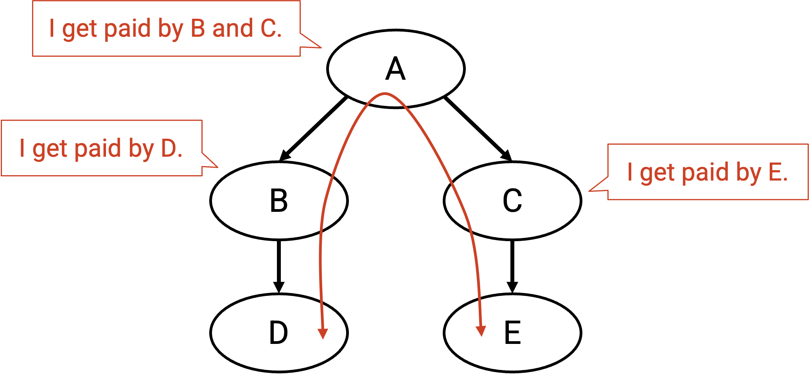
Instead of B and C both paying A, perhaps they choose to establish a peer relationship, which causes the AS graph to change:
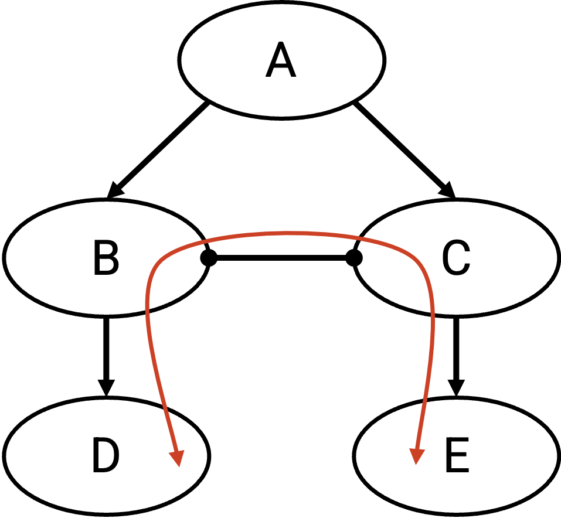
Now, another possible path for the traffic is D, B, C, E. Now, D still needs to pay B, and E still has to pay C. However, B and C no longer need to pay A, and they don’t pay each other (peering relationship).
Again, we can check if the transit ASes on this path, namely B and C, will agree to announce and participate in this route. B’s neighbors are a customer (D) and a provider (C). B is making money from the customer (D), and thinks this path is good. Similarly, C has at least one customer neighbor (E), so C also thinks this path is good.
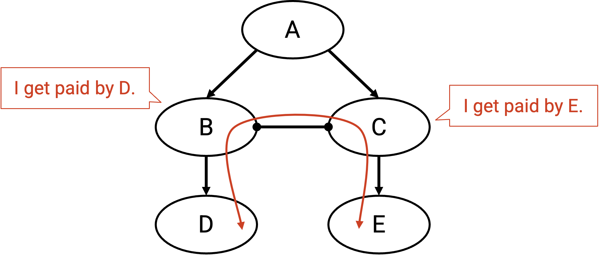
We’ve just reasoned that there are two good paths that can be used to send messages from D to E. Now, B must decide to forward through either path B-A-C-E, or path B-C-E. Which path should B choose? According to our first principle, B prefers the most profitable path (not the shortest path). In B-A-C-E, the next hop is provider A (who we’d have to pay), and in B-C-E, the next hop is peer C (no payment needed). Therefore, B will select the path through C, giving final path D-B-C-E.
Note: It seems like B and C are saving money with the additional peering relationship, so why wouldn’t every AS establish peer relationships to save money? In real life, establishing a link also requires installing physical infrastructure (e.g. laying cables underground), so there’s a cost trade-off to establishing new relationships between ASes, in exchange for cheaper routes.
Routes are Valley-Free
More generally, paths in the AS graph are always valley-free.
Thinking in terms of the hierarchy structure, if a path includes a lateral hop via a peering link, the immediate next hop needs to go downhill to a customer. The next hop cannot be lateral again (both neighbors peers), and the next hop cannot be uphill to a provider (peer and provider neighbors).
Thinking in terms of the hierarchy structure, if a path includes a downward hop from provider to customer, the immediate next hop must continue to go downhill to one of its customers. The next hop cannot be lateral again (neighbors are provider and peer), and the next hop cannot be uphill (neighbors are both providers).
If a downhill link must be followed by another downhill link, then we can conclude that as soon as you have a downhill link in a path, all subsequent links must also be downhill. A valley is a path that goes downhill, and then turns around to start going uphill. Paths cannot contain valleys, because once you start going downhill, you must continue downhill all the way to the destination.
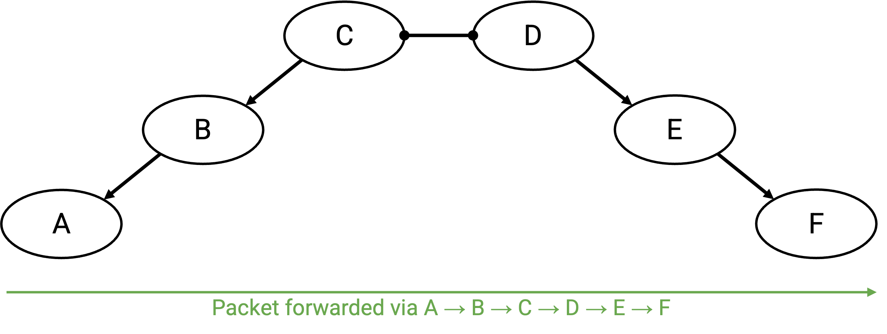
In summary, here are the rules we’ve derived (though it’s better to understand them in terms of respecting AS money preferences, instead of memorizing them):
- An uphill link can be followed by peering link, a downhill link, or another uphill link. (If the previous hop pays me money, I’m happy to forward the packet to anybody.)
- A peering link can only be followed by a downhill link. (If the previous hop isn’t paying me, I need the next hop to be a customer that pays me.)
- A downhill link can only be followed by a downhill link. (If the previous hop is a provider I’m paying, I need the next hop to be a customer that pays me.)
These rules mean that routes are always valley-free and single-peaked. A route can start 0 or more climbing uphill links. Eventually, it will reach a single peak, and traverse 0 or 1 peering links. Then, the route must start going downhill all the way to the destination (no more lateral or uphill moves).
Paths cannot have valleys (going downhill and then turning to go back uphill). Also, paths cannot have lateral moves anywhere except the peak. As soon as you make a lateral move, you must turn around and go back down. You cannot continue traveling laterally or uphill.
ASes Want Autonomy and Privacy
When designing a protocol for computing inter-domain routes, our protocol should respect the autonomy and privacy of each AS.
ASes want autonomy, the freedom to choose their own arbitrary policies, without coordinating with other ASes, or worrying about what policies the protocol allows. In practice, the policies usually follow the money-based principles we described, but the protocol shouldn’t force the AS to follow any specific policy.
ASes also want privacy. ASes don’t want to have to explicitly tell others in the network about their preferences and policies. For example, an AS shouldn’t need to explicitly tell everybody about whether its neighbors are peers, customers, or providers. This reflects real-world business strategies. As a company, you might not want to reveal information about your customers and providers to your rivals.
Note that our definition of privacy says that ASes shouldn’t need to explicitly reveal their policies. In practice, ASes still need to coordinate with the rest of the network to agree on paths through the network, so some amount of information leakage is inevitable. Reverse-engineering techniques exist to trace the routes packets are taking through the network.
For example, it’s unavoidable that others on the network can discover what route a packet is taking. However, our protocol shouldn’t force an AS to tell the world “I liked this path more than this other path.” We also shouldn’t force an AS to disclose who their providers, peers, and customers are.